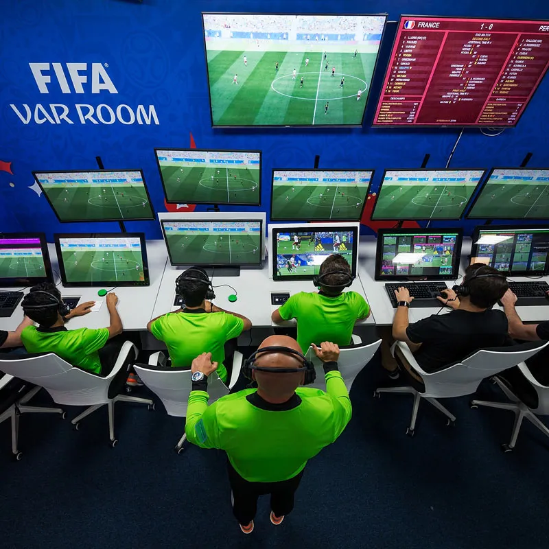
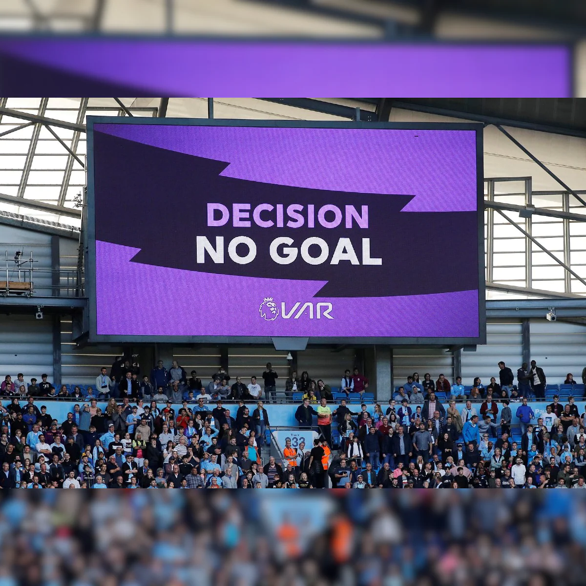

The Video Assistant Referee, in short form VAR, is exactly what its name entails.
The VAR system was first created by the Refereeing program 2.0 in the early 2010's, and was first used in professional football in the Dutch 2012/13 season.
VAR is a very general term, but the software is used for resolution of any major fouls, offsides, goal checks, and other different important game decisions. The VAR system - at the moment - is ONLY used when a real referee cannot decide a call and must result to the computer's decision.
VAR uses a set of cameras & drones to give the referee instant access to replay footgae of events that just happened, including slow-motion and other important tweaks. When it comes to deciding very slim offside calls, or whether or not the ball croased the goal line, the VAR system uses its cameras and sensors to make the decision entirely itself.


How does VAR affect football?
VAR is a very controversial part of football, but that mainly arises from fans of teams who have had major goals rejected by the VAR system.
VAR is so precise, that some calls that would never be made by a real referee are made by the system, and this has people arguing over its impact on football as a whole. Many argue that it ruins football by not letting the referee be more independent and make calls based on his own perspectives.
Personally, I think that the VAR system is good but should only be used in uncertain cases where a goal/penalty is at stake.